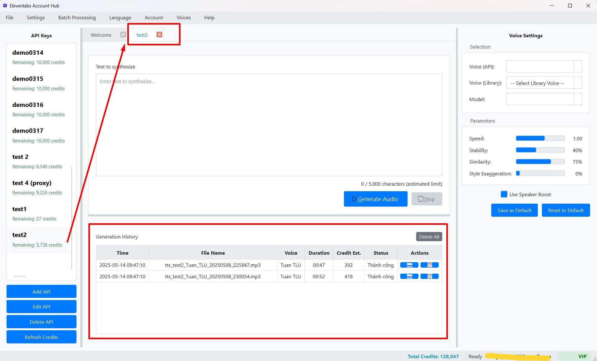

Quản lý Lịch sử Text-to-Speech (TTS)
Mỗi khi bạn thực hiện một tác vụ tạo giọng nói (TTS) bằng một Khóa API cụ thể, ElevenLabs Account Hub sẽ tự động lưu lại một bản ghi về tác vụ đó vào lịch sử. Lịch sử này giúp bạn theo dõi các lần tạo TTS trước đây, dễ dàng tìm lại các tệp âm thanh đã tạo và xem lại các cài đặt đã sử dụng.
Bảng lịch sử được hiển thị ở phần dưới của mỗi tab TTS trong Không gian Làm việc (Cột Giữa), và nó chỉ hiển thị lịch sử liên quan đến Khóa API của tab đó.
 (Hình ảnh: Bảng Lịch sử TTS hiển thị trong một tab làm việc)Thông tin Hiển thị trong Bảng Lịch sử
Mỗi hàng trong bảng lịch sử đại diện cho một lần tạo TTS và cung cấp các thông tin sau:
- Time (Thời gian): Ngày và giờ chính xác khi tác vụ tạo giọng nói được thực hiện.
- File Name (Tên Tệp): Tên của tệp âm thanh (.mp3) đã được tạo và lưu. Nếu việc lưu tệp gặp lỗi, cột này có thể hiển thị thông báo như "Lỗi lưu tệp".
- Voice (Giọng nói): Tên của giọng nói (từ ElevenLabs hoặc từ thư viện cục bộ) đã được sử dụng cho lần tạo này.
- Duration (Thời lượng): Thời lượng của tệp âm thanh được tạo, hiển thị dưới dạng
MM:SS(phút:giây). - Credit Est. (Tín dụng Ước tính): Số lượng ký tự ước tính đã được sử dụng từ Khóa API cho lần tạo giọng nói này. Con số này có thể đã được điều chỉnh dựa trên mô hình TTS được chọn.
- Status (Trạng thái): Cho biết kết quả của tác vụ tạo giọng nói:
- "Thành công": Tác vụ hoàn tất và tệp âm thanh được lưu thành công.
- "Lỗi Lưu File": Tác vụ tạo giọng nói thành công nhưng có lỗi xảy ra khi lưu tệp âm thanh.
- "Lỗi API" (hoặc thông báo lỗi cụ thể khác): Có lỗi xảy ra trong quá trình tương tác với API của ElevenLabs.
- Actions (Hành động): Cung cấp các nút để bạn tương tác với mục lịch sử đó.
Các Hành động với Mục Lịch sử
Đối với mỗi mục trong bảng lịch sử, bạn có thể thực hiện các hành động sau thông qua các nút ở cột "Actions":
-
Mở Thư mục chứa File:
- Nhấn vào biểu tượng này (thường là hình thư mục đang mở).
- Hành động này sẽ mở thư mục trên máy tính của bạn, nơi chứa tệp âm thanh .mp3 tương ứng với mục lịch sử đó.
- Nút này chỉ khả dụng nếu tệp âm thanh đã được lưu thành công (trạng thái "Thành công").
-
Xóa Mục Lịch sử:
- Nhấn vào biểu tượng này (thường là hình thùng rác).
- Hành động này sẽ xóa bản ghi lịch sử đó khỏi cơ sở dữ liệu của phần mềm ElevenLabs Account Hub.
- Lưu ý quan trọng: Việc xóa mục lịch sử này CHỈ XÓA BẢN GHI TRONG ỨNG DỤNG. Nó KHÔNG XÓA TỆP ÂM THANH .mp3 đã được lưu trên ổ cứng máy tính của bạn. Nếu bạn muốn xóa cả tệp âm thanh, bạn cần thực hiện thủ công trong trình quản lý tệp của hệ điều hành.
- Một hộp thoại xác nhận sẽ xuất hiện trước khi xóa để bạn chắc chắn về hành động của mình.
Xóa Toàn bộ Lịch sử cho một Khóa API
Nếu bạn muốn dọn dẹp và xóa tất cả các mục lịch sử cho Khóa API đang hoạt động (tức là Khóa API của tab TTS hiện tại), bạn có thể sử dụng nút "Delete All" (Xóa Tất cả).
- Nút "Delete All" thường nằm ở góc trên bên phải của khu vực bảng lịch sử trong mỗi tab TTS.
- Nhấn vào nút này.
- Một hộp thoại xác nhận sẽ xuất hiện, cảnh báo bạn rằng hành động này sẽ xóa toàn bộ lịch sử TTS của Khóa API hiện tại khỏi cơ sở dữ liệu của ứng dụng và không thể hoàn tác.
- Nếu bạn chắc chắn, nhấn "Yes" (Đồng ý) để tiếp tục. Tất cả các mục lịch sử liên quan đến Khóa API này sẽ bị xóa khỏi bảng hiển thị và cơ sở dữ liệu.
Tự động Dọn dẹp Lịch sử Cũ (Tính năng Dự kiến)
Trong các phiên bản tương lai, phần mềm có thể được trang bị tính năng tự động dọn dẹp các mục lịch sử đã quá cũ (ví dụ: những mục được tạo ra hơn 30 ngày trước) để giúp cơ sở dữ liệu luôn gọn gàng và tối ưu hiệu suất. Thông tin chi tiết về tính năng này sẽ được cập nhật khi nó được triển khai.
Việc quản lý lịch sử giúp bạn dễ dàng theo dõi công việc của mình và truy cập lại các kết quả TTS một cách nhanh chóng.